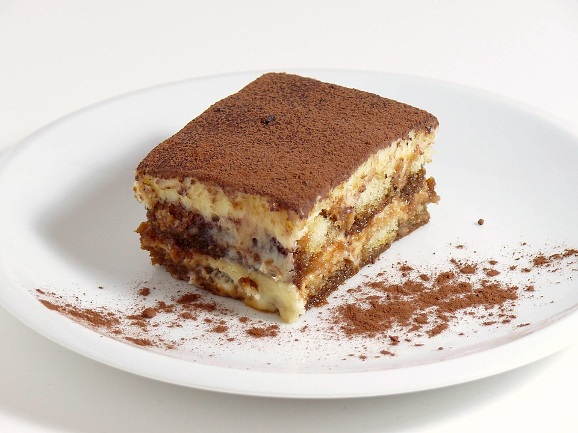

Tiramisu recipe
Home

Description
Tiramisu is a beloved Italian dessert made of layers of espresso-soaked ladyfingers and a luscious mascarpone-based cream,
dusted with cocoa. The dessert balances bold coffee and cocoa flavors with a sweet, velvety texture from whipped egg yolks and mascarpone,
often finished with a touch of Marsala wine or coffee liqueur. It's elegant yet comforting — a perfect make-ahead treat for gatherings.
Ingredients
- 300 g (10-12 oz) ladyfingers (savoiardi)
- 3 large egg yolks
- 100 g (1/2 cup) granulated sugar
- 500 g (17.6 oz) mascarpone cheese
- 300 ml strong espresso, cooled
- 2-3 tbsp Marsala wine or coffee liqueur (optional)
- Cocoa powder for dusting
Steps
- Make espresso and soak: Brew strong espresso and let it cool; stir in Marsala or coffee liqueur if using. Quickly dip each ladyfinger into the espresso (do not soak) and arrange a layer in a serving dish.
- Prepare the cream: Whisk the egg yolks and sugar together over a bain-marie or with an electric mixer until pale and slightly thickened. Allow to cool slightly, then fold in the mascarpone until smooth and creamy.
- Layer: Spread half of the mascarpone mixture over the first layer of soaked ladyfingers. Add another layer of espresso-dipped ladyfingers, then spread the remaining mascarpone mixture on top.
- Chill: Cover and refrigerate for at least 4 hours or overnight to allow flavors to meld and the dessert to set.
- Finish and serve: Just before serving, dust the top generously with cocoa powder. Slice and serve chilled.